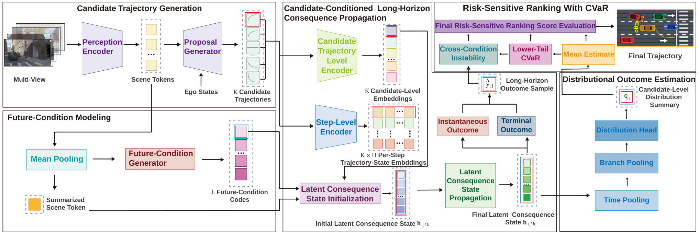

Summary
候选式端到端规划里，评估器把候选质量压成一个确定性标量，于是”名义分数接近、但其中一条藏着灾难性尾部”的情况无法被区分。RiSE-Drive 只改评估阶段：先用未来条件生成器给出 条分支，对每个候选-分支对做潜空间后果传播（GRU 式逐步更新，把逐时刻结果与终止结果按 折扣累加成一条长期结果样本），用 个有序分位数估计该候选的结果分布，最后按均值 − 尾部缺口 − 跨条件波动排序。在完全对齐的 DrivoR 管线上，只增加 0.1M 可训练参数（18.8M → 18.9M）就把 NAVSIM-v1 navtest PDMS 从 93.1 提到 94.2、NAVSIM-v2 navhard EPDMS 从 48.3 提到 51.3、HUGSIM HD-Score 从 35.7 提到 39.5；代价是 EP 一致下降（89.1 → 88.7、Stage-II 70.0 → 68.7），即更保守的选择策略。
Problem & Motivation
- 候选式规划（anchor / proposal / diffusion / flow）已经把动作空间做成多模态，剩余瓶颈从”生成”转移到”评估”：给定 条都合理的轨迹，选哪条执行。
- 现有选择器把候选质量压成确定性点分数、启发式子分或单次结果估计。这有三个直接后果：延迟失效（当前帧看不出来、几秒后才暴露的失败）不可见；尾部风险不可见；排序稳定性恰好在最需要鲁棒的时候最差。
- 作者的主张：候选质量不是标量，而是由未来条件诱导的长期结果分布 。因此正确做法是估计该分布，并按它的下尾统计排序，而不是只比均值。
- 选 CVaR 而不只是方差，是因为 CVaR 是下尾的凸相干风险度量：只惩罚”低于均值的部分”，不会被”上尾很好”掩盖；再叠加跨条件标准差惩罚，用来抑制”某个未来分支下特别不稳”的候选。
- 定位很明确：不动感知与提案生成，只换评估头。这既让归因干净（同 backbone、同 proposal 集，唯一变量是评估），也让论文的论点变成可证伪的——如果评估不是瓶颈，换头不会带来稳定提升。
Method
1. 基线与形式化（§3）
- DrivoR 是 generate-and-score 的代表：多相机编码器得到场景 token ，提案生成器给出 条候选 ，每条候选是 步 ego-local 位姿 、；打分头输出 维子分 ，线性聚合成 ，取 。
- 论文把这套写法压缩成 ，并指出 只是 的点估计——没有被建模的是 带来的分布。
2. 未来条件建模（§4.2）
- 场景 token 先均值池化成 ，再由 个独立的条件生成器给出条件码：
- 这 个条件码就是评估时使用的全部”未来假设”，推理时它们由当前场景直接预测而来（不是从学到的分布里采样，见 Weaknesses）。
3. 候选条件化的长期后果传播（§4.3）
- 候选整体编码 ，逐位姿编码 ；初始隐状态把场景、候选、条件三者相加：
- 沿时域用带门控的更新推进（GELU 候选态 + sigmoid 门 + 残差混合）：
- 每步解一个瞬时结果、末态解一个终止结果，折扣累加成该分支下的长期结果样本：
4. 结果分布估计（§4.4）
- 先把每条分支的隐状态沿时间池化，再跨分支平均，得到候选级表示 ；分位数头从它输出 个有序分位数，单调性用”首分位数 + softplus 增量”硬保证：
- 均值估计取分位数的平均 。
5. 风险敏感排序（§4.5）
- 令 ，下尾 CVaR 取最低 个分位数的均值；尾部缺口 ；跨条件波动 是 个分支结果样本的标准差。最终排序分数：
- 三项的分工：均值管”总体好不好”， 管”下尾有多差”， 管”换个未来条件会不会翻车”。
6. 训练目标（§4.6）
- 分支级结果用 Huber 回归；分位数用 pinball loss；排序用带 margin 的 pairwise 损失，方向由目标分数 的符号决定（ 由目标样本的均值、经验 CVaR、标准差按上式构造）：
7. 分支标签怎么来（附录 A.2，方法的关键前提）
- 4 条分支不是学出来的隐变量，而是从训练日志里按两个标量交通量切出来的：longitudinal pressure = 前车纵向加速度取负；lateral approach = 同向相邻车朝 ego 走廊的横向速度（朝向为正）。
- 构造方式：先按 longitudinal pressure 的经验排名把日志窗口二分，再在每一半内按 lateral approach 的组内排名二分，得到四个条件（低/低、高/低、低/高、高/高）；每组取最接近该组分量中位数的那条观测（两量先按训练集 IQR 归一化再算距离）作为代表。
- 代表值用于设定前车目标纵向加速度与邻车目标横向速度，由 benchmark 在道路与动力学约束下平滑施加；每个候选在同样四个条件下各跑一次 benchmark rollout + scoring，得到一组 。也就是说监督信号来自仿真器对”候选 × 条件”的逐格打分。
8. 实现细节
| 项目 | 设置 |
|---|---|
| 基线管线 | DrivoR（camera-only），感知 backbone 与提案生成器完全冻结不变 |
| 输入与 backbone | 4 路环视相机；DINOv2 ViT-S，每相机 16 个 camera-aware register token；4 层 transformer decoder，hidden 256；LoRA rank 32 |
| 候选数 | |
| 未来分支数 | |
| 分位数个数 | |
| 隐层宽度 | |
| 风险参数 | 、、、 |
| 排序 margin / 损失权重 | ； |
| 优化 | AdamW，lr ，cosine decay，4×RTX 4090 |
| 参数量 | 可训练 18.9M / 总计 42.3M（DrivoR 为 18.8M / 41.8M） |
Pipeline

图按五个模块自左向右：候选轨迹生成（多视角图像 + ego 状态 → 感知编码器 → 场景 token → 提案生成器 → 条候选）、未来条件建模（场景 token 均值池化 → 未来条件生成器 → 个条件码）、候选条件化的长期后果传播（候选级编码 + 逐步编码，与场景、条件一起初始化隐状态，逐步推进并解出瞬时结果与终止结果）、分布结果估计（时间池化 → 跨分支池化 → 分布头 → 候选级分布摘要 ）、风险敏感排序（均值估计 + 下尾 CVaR + 跨条件不稳定 → 最终排序分 → 输出轨迹）。
- 编码：4 路环视图像 + ego 状态 → 场景 token （与 DrivoR 相同，不改）。
- 提案： 输出 条候选轨迹，每条含 步 ego-local 。
- 分支生成： 过 个条件生成器得到 （推理时全部由当前场景预测）。
- 后果传播：对 个候选-条件对并行推进 步隐状态，分别解出逐时刻结果与终止结果，折扣累加成 。
- 分布估计：时间 + 跨分支池化 → → 个单调分位数 → 均值、下尾 CVaR、跨分支标准差。
- 排序与执行： 取最大者作为规划输出；提案生成与感知在此阶段完全不参与改动。
- 训练/推理差异：训练需要 benchmark 对”候选 × 四条件”逐格 rollout 打出的 作监督；推理只需要当前场景，不需要任何未来 rollout。
Key Results
1) NAVSIM-v1 navtest（Table 1，PDMS）
| Method | Input | Backbone | NC↑ | DAC↑ | EP↑ | TTC↑ | Comf.↑ | PDMS↑ |
|---|---|---|---|---|---|---|---|---|
| Human | – | – | 100 | 100 | 87.5 | 100 | 99.9 | 94.8 |
| Hydra-MDP | C & L | ResNet-34 | 98.3 | 96.0 | 78.7 | 94.6 | 100 | 86.5 |
| DiffusionDrive | C & L | ResNet-34 | 98.2 | 96.2 | 82.2 | 94.7 | 100 | 88.1 |
| WoTE | C & L | ResNet-34 | 98.5 | 96.8 | 81.9 | 94.9 | 99.9 | 88.3 |
| DriveSuprim | C | ResNet-34 | 97.8 | 97.3 | 86.7 | 93.6 | 100 | 89.9 |
| DriveVLA-W0 | C | Emu3-8B | 98.7 | 99.1 | 83.3 | 95.3 | 99.3 | 90.2 |
| iPad | C | ResNet-34 | 98.6 | 98.3 | 88.0 | 94.9 | 100 | 91.7 |
| Centaur | C | V2-99 | 99.5 | 98.9 | 85.9 | 98.0 | 100 | 92.6 |
| DrivoR | C | ViT-S | 98.9 | 98.3 | 89.1 | 96.2 | 100 | 93.1 |
| RiSE-Drive | C | ViT-S | 99.5 | 98.5 | 88.7 | 98.4 | 100 | 94.2 |
- 与同 backbone、同提案集的 DrivoR 相比 PDMS +1.1，NC 98.9 → 99.5、TTC 96.2 → 98.4，EP 反而从 89.1 降到 88.7；作者把这解读为”更安全、更保守的选择策略”。
- NC 99.5 与 Centaur 并列全表最高（Human 除外），TTC 98.4 为全表最高（Centaur 98.0）；DAC 仍低于 DriveVLA-W0 的 99.1，EP 低于 iPad 的 88.0 与 DrivoR 的 89.1。
- 表内两个非 ResNet 强基线 Centaur（92.6）与 DrivoR（93.1）都在 RiSE 之下，说明该增益不是”用了更强 backbone”带来的。
2) NAVSIM-v2 navhard-two-stage（Table 2，EPDMS）
| Method | Backbone | Stage-II NC | Stage-II DAC | Stage-II DDC | Stage-II TTC | Stage-II EP | EPDMS |
|---|---|---|---|---|---|---|---|
| LTF | ResNet-34 | 77.7 | 70.2 | 84.2 | 75.6 | 85.1 | 23.1 |
| DiffusionDrive* | ResNet-34 | 82.1 | 72.2 | 88.5 | 78.8 | 85.1 | 24.2 |
| RAP-DINO | ViT-H | 83.2 | 83.9 | 87.4 | 80.4 | 86.9 | 39.6 |
| DriveSuprim | V2-99 | 87.9 | 88.8 | 89.6 | 86.0 | 80.3 | 42.1 |
| GTRS-Dense | V2-99 | 91.2 | 89.4 | 94.4 | 90.0 | 69.5 | 45.0 |
| ZTRS | V2-99 | 91.1 | 90.4 | 95.8 | 89.8 | 63.6 | 48.1 |
| DrivoR | ViT-S | 90.2 | 88.4 | 91.9 | 88.0 | 70.0 | 48.3 |
| RiSE-Drive | ViT-S | 91.5 | 89.8 | 94.6 | 91.3 | 68.7 | 51.3 |
- 相对 DrivoR +3.0 EPDMS，相对表内此前最强的 ZTRS（48.1）+3.2；增益集中在 Stage-II 的安全项（NC +1.3、DDC +2.7、TTC +3.3），EP −1.3。
- Stage-I 上两者的安全项已经接近饱和（RiSE NC 99.0 vs DrivoR 98.8），提升主要来自被扰动后的第二阶段——这正是论文主张”长期后果建模”该起作用的地方。
3) HUGSIM 真闭环（Table 3，RC / HD-Score）
| Method | RC Easy | RC Medium | RC Hard | RC Extreme | RC Avg | HD Easy | HD Medium | HD Hard | HD Extreme | HD Avg |
|---|---|---|---|---|---|---|---|---|---|---|
| LTF | 67.8 | 35.1 | 26.2 | 40.5 | 38.9 | 58.9 | 18.0 | 9.8 | 25.9 | 23.7 |
| UniAD | 78.4 | 60.5 | 33.6 | 17.8 | 45.9 | 64.9 | 45.8 | 20.6 | 6.6 | 32.7 |
| DrivoR | 80.9 | 50.5 | 33.8 | 47.1 | 49.8 | 73.3 | 34.6 | 18.8 | 32.5 | 35.7 |
| RiSE-Drive | 76.5 | 53.3 | 34.1 | 46.3 | 50.1 | 74.6 | 37.2 | 22.7 | 39.2 | 39.5 |
- HD-Score +3.8（hard +3.9、extreme +6.7），但 RC 只 +0.3，且 Easy（76.5 vs 80.9）与 Extreme（46.3 vs 47.1）两个子集回退：闭环里”更少碰撞/更合规”换来的不是”走得更远”。
- 这行数据也是 Weaknesses 里讨论 safety–progress 权衡的主要依据。
4) 组件消融（Table 4）
| 配置 | NAVSIM-v1 PDMS | v1 NC | navhard EPDMS | navhard TTC |
|---|---|---|---|---|
| B-I：DrivoR | 93.1 | 98.9 | 48.3 | 88.0 |
| B-II：DrivoR w/o SD（轻量直接打分头） | 91.9 | 98.4 | 45.6 | 84.6 |
| + FCG（未来条件生成） | 92.6 | 98.7 | 46.8 | 86.5 |
| + CTE（候选级编码） | 92.9 | 98.8 | 47.5 | 87.3 |
| + SLE + LCP（逐步编码 + 长期后果传播） | 93.5 | 99.1 | 49.2 | 89.6 |
| + DOE（分布估计） | 93.9 | 99.3 | 50.6 | 90.5 |
| + RSR（风险敏感排序） | 94.2 | 99.5 | 51.3 | 91.3 |
- 在 harder 的 navhard 上增益最大的单步是 SLE+LCP（EPDMS +1.7），与其”长期后果传播是核心”的主张一致；但在 v1 PDMS 上最大单步其实是 FCG（+0.7）。DOE 与 RSR 分别再 +0.4 / +0.3 PDMS、+1.4 / +0.7 EPDMS，作者据此称两者互补而非可替换。
- 注意起点是 B-II 而不是 DrivoR：换掉原打分头先掉 1.2 PDMS，后面 2.3 分的恢复里有一部分只是把删掉的容量补回来。
5) 参数开销（Table 5）
| 配置 | 可训练参数 | 总参数 | PDMS | EPDMS | HD-Score Avg |
|---|---|---|---|---|---|
| DrivoR | 18.8M | 41.8M | 93.1 | 48.3 | 35.7 |
| B-II | 17.2M | 39.9M | 91.9 | 45.6 | 33.8 |
| RiSE-Drive | 18.9M | 42.3M | 94.2 | 51.3 | 39.5 |
- 相对 DrivoR 只多 0.1M 可训练参数、0.5M 总参数，作者据此论证增益是结构性的而非模型变大。
6) 定性（Fig. 3）：在 NavSafe 的四个安全关键场景（unprotected left turn、exit ramp、yielding、roundabout）上，RiSE-Drive 在冲突区更保守——UNPL 与 RDBT 只在有足够间距后才推进，EXR 稳定跟随匝道几何，YLD 先谨慎处理路权再恢复前进。
Strengths & Weaknesses
Strengths
- 归因设计干净：感知与提案生成完全冻结，唯一变量是评估头，因此 +1.1 / +3.0 / +3.8 三个增益可以直接归给”评估方式”而不是 backbone 或候选集变大。
- 把”风险”落成了可实现的排序统计，而不是一个软正则或 curriculum：CVaR 缺口管下尾，跨条件标准差管不稳定，两个惩罚项都有明确的决策含义，且排序损失直接用目标分数差构造 pairwise margin，训练目标与推理准则一致。
- 三套协议上方向一致且增量最大处符合假设：v1 与 v2 navhard 的提升集中在 NC/TTC/DDC，HUGSIM 的提升集中在 hard/extreme 的 HD-Score；这些正好是”需要长期后果建模”才会改善的项。
- 诚实报告了不利项：EP 在 v1（89.1 → 88.7）与 v2 Stage-II（70.0 → 68.7）都下降，论文明确写了 “safer and slightly more conservative selection policy”，没有只挑有利指标。
- 分支构造协议可复现：附录 A.2 把四种未来条件如何从日志里切出来、如何选代表观测、如何由 benchmark 施加都写清楚了，比多数”future branch”含糊的论文扎实。
- 参数成本极低：+0.1M 可训练参数换来 +1.1 PDMS / +3.0 EPDMS / +3.8 HD-Score，工程上很容易插到别的 generate-and-score 管线里。
Weaknesses
- 所谓”结果分布”实际上只有 4 个点，且这 4 个点由两个标量交通量张成：longitudinal pressure（前车纵向加速度）与 lateral approach（邻车横向速度）的四象限组合。天气、道路几何、行人、多车交互、以及”自车动作引起的他车反应”都不在 的支撑集里。论文用 “plausible future perturbations” 描述它，容易让读者高估覆盖范围。
- 尾部估计的统计基础很薄： 个样本、 个分位数、 意味着 ，即 CVaR 只由最低 2 个分位数、底层只有 4 个观测估计出来。论文没有给任何关于 、、 的敏感性实验，“尾部风险被更准确估计”这一核心主张缺少统计支撑。
- 监督来自评测器本身： 是 benchmark 对”候选 × 条件”逐格 rollout + scoring 的结果（A.2）。这使评估器在学复现 NAVSIM 的指标函数，而不是学真实世界的后果；同时意味着训练时必须有一个能对任意候选、任意条件做闭环打分的仿真器。论文把方法定位成”只改评估头、可与任何 proposal 集组合”，但这一前提把部署场景（真车没有 roll-out 打分器）排除在外。
- “更好评估”与”更多监督”没有被分离：DrivoR 本身也是 oracle 子分监督，但它只拿到一条候选的未来；RiSE 拿到的是”每条候选 × 四个条件”的 4 倍标注。缺少”给 DrivoR 同样的 4 条件 target”的对照，因此无法判断增益来自分布建模还是来自标注量增加。
- safety–progress 权衡被一句话带过：v1 EP −0.4、v2 Stage-II EP −1.3、HUGSIM RC 仅 +0.3 且 Easy（−4.4）与 Extreme（−0.8）子集回退。这些都是”用前进换安全”的直接证据，论文没有做 扫描或 PDMS–EP 的 Pareto 分析来说明这个交换是否划算。
- 推理成本完全没报：推理要为 候选 × 分支各推进 步隐状态，再做分位数与排序，相对 DrivoR 的额外延迟、显存、吞吐一个数字都没有。对一个主打”只改评估头、可插拔”的方法，这是关键缺失。
- 消融起点是 B-II 而非 DrivoR：把 DrivoR 的 scoring decoder 换成轻量直接打分头后先掉 1.2 PDMS（93.1 → 91.9），随后 2.3 分的恢复里包含”把删掉的容量补回来”。相对真正 baseline 的净增益是 +1.1，而不是表里看起来的 +2.3。
- 单次运行、无方差：+1.1 PDMS、+3.8 HD-Score 都是单点数字，全文没有 seed、标准差或置信区间；HUGSIM 只有 70+ 场景 / 400+ 场景，3.8 分的稳定性无从判断。
- 声称评 NavSafe，但只给了定性：§5.1 专门介绍了 NavSafe 诊断集并说它”比 navtest 是更敏感的探针”，结果只在 §5.4 用四个场景做了可视化，没有任何 NavSafe 定量表。同理，§5.1 说在 v2 的 real-only navtest 上报 Stage-I EPDMS，正文与表格里都没有这个数字。
- 没有 Limitations 一节：论文以 Conclusion 结束，上述训练依赖仿真器、条件覆盖窄、推理开销未知这些边界都没有在正文自我陈述。
- 附录承认了正文表格的印刷错误：A.1 明确写 “Table 3 corrects the HUGSIM Easy RC for RiSE-Drive, which was misprinted as 79.5 in the conference version”（arXiv 版为 76.5）。单看这一处是诚实修正，但它降低了对关键表其他单元格的信任度，也说明主结果表的校对流程有问题。
Notes
-
论文定位：不是新的 planner，也不是新的候选生成器，而是把”评估”从点估计改成分布 + 风险排序。核心 insight 是候选质量应当被建模成”由未来条件诱导的长期结果分布”，而排序准则必须显式惩罚下尾与跨条件不稳定——这与另一条路线（2611-RFWorld 主张根本不需要为每条候选预测未来）构成正面冲突：RiSE 恰恰是”候选条件化 rollout”的强化版。
-
可迁移点：
- CVaR 缺口 + 跨条件方差的双惩罚可以直接套到任何”候选集 + 打分器”的决策环节（规划器、工具选择、GUI 动作选择），只要能为同一候选在不同假设下多次打分。
- 用仿真器对”候选 × 条件”逐格打分成监督是一个可复用的离线标注配方：它把”评估器”从”学人类偏好”变成”学可执行的判据”，代价是需要可控的分支模拟能力。
- 分位数头的单调化技巧（首分位数 + softplus 增量）是通用的分布回归实现细节，比排序后强制排序更稳定。
- 用两个标量交通量二分日志窗口构造四类未来条件是低成本构造分支的模板：不需要生成模型，也不需要人工标注场景难度。
- 训练目标与推理准则对齐：排序损失直接作用在 上而不是各个分量上，避免了”训练优化子分、推理用加权和”的口径漂移。
-
待跟进：
- 、、 的敏感性： 从 4 加到 8/16、 从 0.2 调到 0.05，CVaR 估计与排序行为怎么变？只由 4 个样本估计的下尾是否稳定？
- 池化方式：当前分位数头吃的是跨分支均值池化的 ，结构上抹平了”某一条分支特别差”的信号。换成 max / attention / 逐分支分位数再聚合，能否让单分支灾难直接可见？
- 去掉仿真器标签后的替代监督：能否用真实日志的接管、急刹、险情标签做弱监督，或用世界模型生成分支后果？这决定方法能否离开 NAVSIM 生态。
- 推理开销与降本： 路传播的实测延迟，以及能否用共享传播、候选子采样或 early-exit 压低。
- safety–progress Pareto：给 与 做扫描，画出 PDMS–EP 前沿，判断”更保守”是否值得。
- 与另两条评估路线同台对照：2611-RFWorld（rollout-free 共享记忆）、World4Scorer（仿真器 outcome 标签）、DrivoR（oracle 子分）在同一 backbone、同一提案集上做三方对照，才能判断”要不要候选条件化未来”。